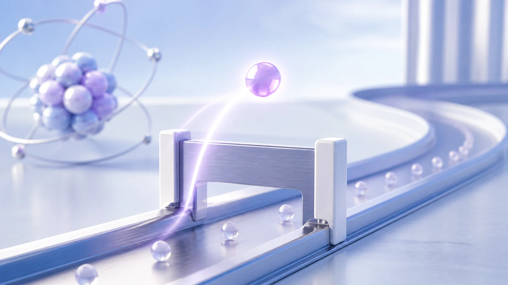
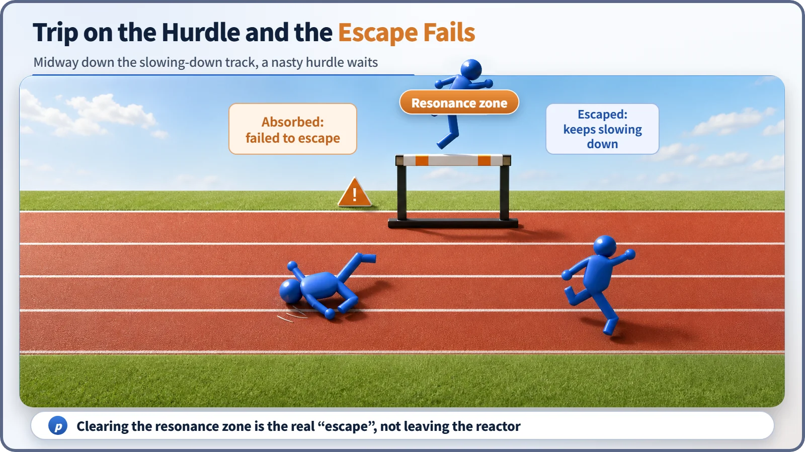
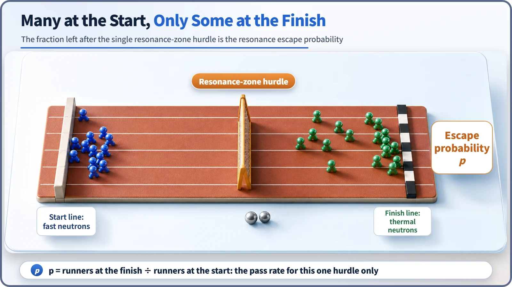

Neutron Physics & the Core · 087
You Have to Clear the Hurdle to “Escape” — Why the Resonance Escape Probability Has Such a Confusing Name
In reactor physics, a neutron that escapes stays inside the reactor. It has simply dodged the resonance absorption trap on its way to thermal energy.

The resonance escape probability p is not about neutrons getting out of the reactor. It is the fraction of fast neutrons that slow down to thermal energy without being captured in the resonance absorption bands of uranium-238 on the way. Neutrons that “escape” stay in the reactor and move on; leaking out of the core is handled by a separate factor, the non-leakage probability. [1]
An easy word pointing the wrong way
Resonance escape probability. Hear it for the first time and it's hard to guess what it means, isn't it? Among nuclear terms it's a star example of a name you can't decode just by reading it. Yet the real problem isn't a difficult word. It's that an easy word points in the wrong direction. That word is "escape."
Say "escape" and everyone pictures the same scene
What comes to mind when you hear "escape"? Most of us picture someone who was trapped somewhere breaking out and getting away. When the word turns up in a nuclear context, it's natural to imagine neutrons getting out of the reactor. That's an understandable guess, because neutrons really do leak out of the core (leakage), and there is a separate probability that deals with exactly that.
Surprisingly, though, the resonance escape probability has nothing to do with getting out. If anything, it's closer to the opposite. Here, "escaped" means the neutron stayed inside the reactor and moved on to the next stage. This neutron didn't break out of anywhere; it survived a close call with capture and stayed in the race. With the name and the meaning this far apart, confusion is almost guaranteed.
So what exactly did the neutron escape from?
The answer is an absorption trap called a "resonance." When fission happens, neutrons fly out at very high speed. For these fast neutrons to react efficiently with the fuel (mainly uranium-235), they have to slow down step by step, bumping into the moderator again and again, until they reach a slow state called a "thermal neutron."
The trouble is that along this slowing-down road, there are narrow traps hidden here and there, where neutrons are swallowed with unusual greed, but only at particular energies. These are the energy bands where uranium-238 absorbs neutrons especially strongly, and they're called "resonances." If a slowing neutron happens to pass through one of these bands and gets caught, it contributes nothing to fission; it is simply absorbed and gone.
Getting through these trap zones without being absorbed, and carrying on slowing down until it becomes a thermal neutron: that is the real meaning of "escape." It's not an escape over the reactor wall. It's an escape from the resonance trap. [1]
A hurdle race makes it much clearer
Picture a track-and-field hurdle race. At the starting signal, the runners burst off the line. They are the neutrons fresh out of fission, still very fast. As they run, they gradually ease their pace (the neutrons slowing down as they bump into the moderator).
But halfway down the track, one particularly nasty hurdle is waiting, a hurdle labeled "resonance zone." It's much taller than anything else on the course, and it sits right where runners are most likely to catch a foot. A runner who trips here is out of the race (a neutron lost to resonance absorption). A runner who clears it keeps going to the finish line: the thermal-neutron state.

See why "clearing the hurdle" fits so well? A hurdler doesn't run off the track; they get over one obstacle in front of them and stay in the race. The "escape" in resonance escape probability means exactly that. Not leaving the reactor, but getting past the resonance obstacle and staying in the slowing-down process to reach the next stage. The fraction of runners who clear this hurdle safely is the resonance escape probability, written p.

And leaking out of the reactor? A completely different story
Here's a misunderstanding worth stopping on. Because of the name, many people take this value to be "the probability that a neutron doesn't leak out of the core." That's a completely different physical process, with its own separate probability. In a reactor, the step from one neutron generation to the next is written as a product of six ratios, six gates the neutrons pass through. The resonance escape probability p handles exactly one of those six gates: "avoiding the resonance traps while slowing down." The gate for "not leaking out across the reactor boundary" exists separately, under an entirely different name: the non-leakage probability. [1] [2]
Lump the two together and you blur two different physical events: (1) being absorbed and lost in a resonance band, and (2) actually crossing the core boundary and leaving. The surest way to avoid the naming trap is to remind yourself, every time you see "escape": not leaving the reactor, but dodging the resonance trap.
As a simple ratio:
p = (neutrons that got through the resonance bands and became thermal) ÷ (fast neutrons that started slowing down)
The value always lies between 0 and 1. Reactor designers arrange the fuel and moderator to push it as close to 1 as they can, keeping the number of runners who trip on the hurdle to a minimum. In real light-water reactor lattices it is normally designed to be a high value, fairly close to 1. [2]
Another common mix-up: "Where does a neutron that fails to escape bounce off to?"
Some people hear "tripped on the hurdle" and imagine the neutron bouncing away or moving somewhere else. It doesn't. A neutron absorbed in a resonance band is simply captured by a uranium-238 nucleus and disappears on the spot; it doesn't fly off anywhere. "Failed to escape" means exactly "absorbed and gone."
Also, a lower value of p at some moment doesn't mean the reactor has suddenly become dangerous. At the design stage, p is weighed together with the other five gates (the reproduction factor, the fast fission factor, the two non-leakage probabilities and the thermal utilization factor) to strike an overall balance, keeping k_eff near 1. It is not, on its own, a yardstick that decides whether a reactor is safe. [2]
In short
- The resonance escape probability (p) is the probability that a neutron born fast gets through the resonance-absorption traps while slowing down, without being caught, and becomes a thermal neutron.
- "Escape" here doesn't mean leaving the reactor; it means escaping the resonance absorption trap (surviving without being absorbed). Not leaking out across the core boundary is the job of a completely different value, the non-leakage probability.
- In the six-factor formula (k∞ = η·ε·p·f for the infinite-medium part), p handles exactly one gate: avoiding resonances while slowing down.
- An absorbed neutron doesn't bounce away; it is captured by a nucleus and disappears. And p alone does not decide whether a reactor is safe.
- p is mainly set at the design stage, through choices such as the arrangement of fuel and moderator.